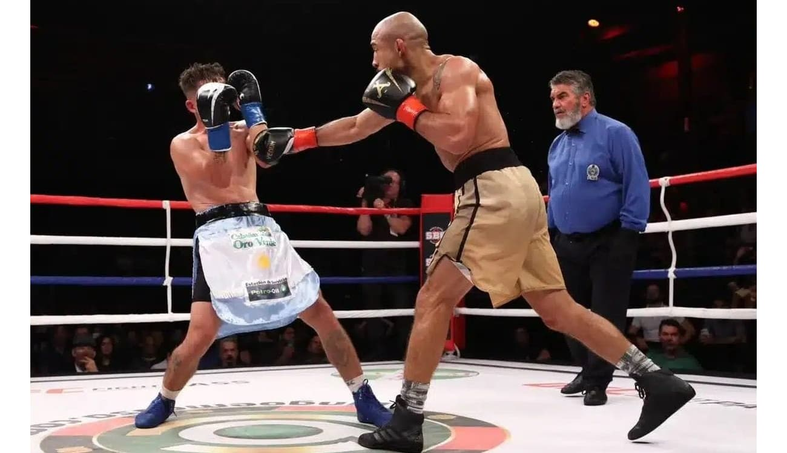

Boxe
Boxe ou pugilismo é um esporte de combate no qual os lutadores calçam luvas acolchoadas e utilizam as mãos para ataca
Vôlei

Voleibol é um esporte praticado numa quadra dividida em duas partes por uma rede, possuindo duas equipes de seis jogadores em cada lado.
Futebol
.jpg)
O futebol é um esporte cujo campo de grama apresenta 105 metros de comprimento por 68 metros de largura, uma padronização da Fifa. Duas equipes compostas por 11 jogadores disputam uma partida em que o objetivo é marcar o máximo possível de gols.
Basquete
.jpg)
O basquetebol ou basquete é um esporte coletivo jogado por duas equipes, que têm o objetivo de fazer pontos ao acertar a bola na cesta do adversário, o alvo fixo na quadra.
Surf

O surfe ou surf é um esporte feito na superfície (seu nome provém da palavra inglesa “surface”) da água. Basicamente, consiste no deslize pelas ondas do mar através de uma prancha.
tênis
O tênis surgiu na Inglaterra, mas não nega o berço francês. Há muitas teorias sobre o seu surgimento, mas há um consenso de que as bases do jogo surgiram do jogo francês Jeu de Paume (Jogo da Palma), ao final do século XII, o qual consistia em rebater uma bola contra o muro utilizando a palma da mão.